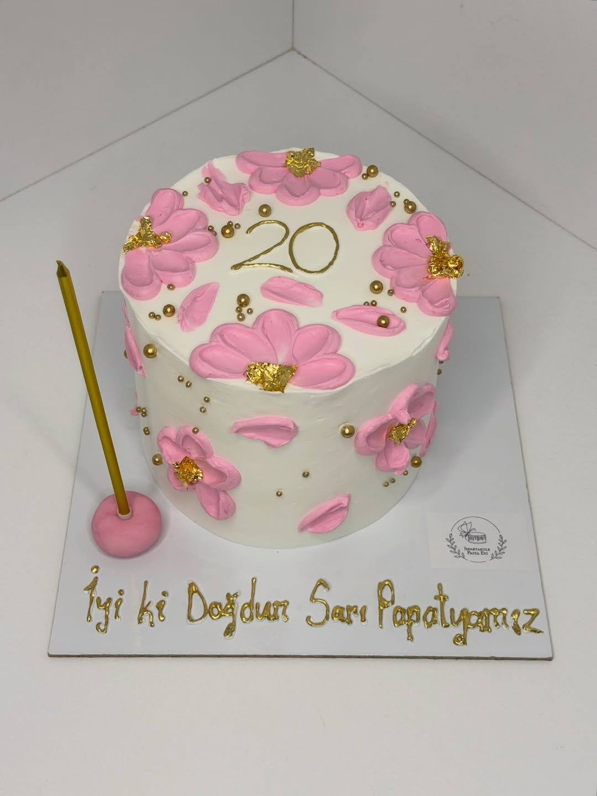

★★★★★Google
Hangi modeli istesem kesinlikle her seferinde daha da güzelini yapıyor. Her ürünüyle tek tek ilgileniyor, malzeme kalitesi de tadı da görünüşleri gibi harika.
Sıla Ö.Yorumun tamamı
Ispartakule / Bahçeşehir / İstanbul
Size özel bir pasta, sevdiklerinize küçük bir sürpriz. Rengini, temasını ve üzerindeki mesajı birlikte düşünelim.
Hayalinizdeki pastayı anlatınİstanbul içi ücretli teslimat ve gel-al.

Mutfağımızdan çıkanlar
Birbirinden farklı tasarımlarımızdan örnekler. Beğendiğiniz bir modeli sipariş notunuzda belirtebilirsiniz.
Birlikte hazırlayalım
Hangi gün için, kaç kişilik bir pasta ya da kaç adet cupcake istediğinizi yazın.
Renk, tema, mesaj ve varsa örnek fotoğrafı gönderin. İçerik tercihlerinizi de birlikte konuşalım.
Tarih uygunluğu, tasarım, ücret ve teslimat planı görüşme sırasında kesinleşir.
Kutlama planınız
Aşağıdaki bilgilerle kısa bir sipariş notu hazırlayın. Notu kopyalayıp Instagram’dan bize iletin; uygunluğu ve ayrıntıları birlikte konuşalım.
Bu alan yalnızca talep metni hazırlar. Sipariş, tarih ve fiyat karşılıklı netleştirildiğinde kesinleşir.
Google yorumları
Hangi modeli istesem kesinlikle her seferinde daha da güzelini yapıyor. Her ürünüyle tek tek ilgileniyor, malzeme kalitesi de tadı da görünüşleri gibi harika.
Ellerinize sağlık, oğlumun doğum günü için pasta söyledik, çok güzeldi.
Pasta siparişimiz beklentimizin de üzerindeydi, cupcake’ler ise gerçekten mükemmeldi. Lezzet ve sunumdan çok memnun kaldık, gönül rahatlığıyla tavsiye ederim.
Yorumlardan kısa alıntılar. Yazım ve noktalama düzenlenmiştir.
Google’da inceleyinİstanbul içi teslimat ve gel-al ayrıntılarını siparişiniz sırasında birlikte planlayalım.
Instagram’dan yazın